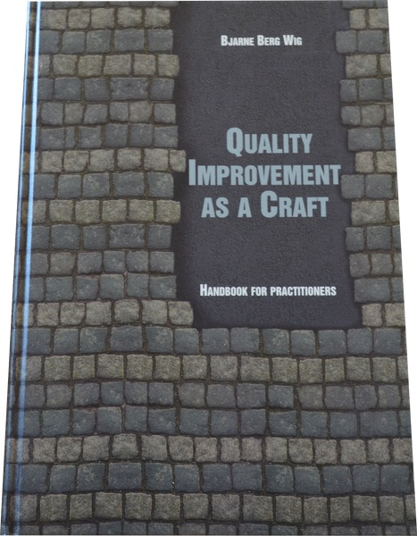

Bøker og ressurser
Bjarne Berg Wigs bøker, med gratis ressurssider, videoer og nedlastinger.
Bøker av Bjarne Berg Wig
Hver bok har gratis ressurssider: kapittelnotater, videoer, maler og nedlastinger.

Systems Thinking with Obeya
Bjarne Berg Wigs guide til å bruke Obeya-rommet for å se hele systemet, samle lederne og lære raskere sammen. De gratis ressurssidene følger boka kapittel for kapittel, med videoer, artikler, verktøy og maler.

Lærende organisasjoner
Boka gir ledere, tillitsvalgte og andre endringsledere kunnskapen som trengs for å gå fra et utdatert system med målstyring, byråkrati og hierarki – til et samfunn som fjerner sløsing i alle former og frigjør de store og ofte skjulte ressursene i alle mennesker.
Den beskriver det nødvendige skiftet fra mål- og resultatstyring til ekte lærende organisasjoner og lærende systemer, i tre deler: Fortid spør hvorfor vi havnet i dette uføret og hvordan vi kommer oss ut av det; Nåtid handler om å gå fra å «innføre Lean» og kontinuerlig forbedring til å bli en ekte lærende organisasjon; Framtid spør hvordan vi utvikler selvorganiserende, åpne og medvirkende organisasjoner.
En rød tråd gjennom boka er systemtenkning – bevissthet om hvordan systemer fungerer og hvordan vi tenker om dem. For å forandre organisasjoner må vi endre hvordan vi tenker. Boka er for alle som vil bli bedre tenkere.

LEAN – Ledelse for lærende organisasjoner
Lean handler om å skape produkter og tjenester med mest mulig verdi og minst mulig sløsing med ressurser, ved å konsentrere seg om flyt, åpne prosesser og kontinuerlig forbedring.
Boka og de digitale ressursene er laget for et gjennombrudd for Lean: et vendepunkt der kontinuerlig forbedring og læring på arbeidsplassen blir hverdag, og alle ledere og medarbeidere i kommuner og bedrifter er aktive i forbedring og fornyelse. Det handler om å gå fra arbeid som effektiv utførelse til å se arbeid som en læringsprosess.
Del I forklarer hvordan man utvikler en gjennombruddsstrategi. Del II tar for seg metodene og verktøyene for å innføre og utvikle Lean i en kommune eller privat virksomhet. Del III, som er ny i denne utgaven, handler om ekte lærende organisasjoner: lærende lederskap og bruk av veiledning, coaching og problemløsende dialog – det som blir igjen når begrepet Lean går over i historien.

Quality Improvement as a Craft
Quality Improvement as a Craft (Hydro Media, 1996) var i mange år det viktigste opplæringsmateriellet for forbedringsteam i Norge. Den er fortsatt svært aktuell og gir oversikt over mange av metodene og verktøyene vi i dag kjenner under navnet Lean. Boka brukes fortsatt i undervisning ved høgskoler og universiteter.
Send oss navn og e-postadresse, så følger vi opp bokbestillingen din.

Det er ledelse
E-bok «Det er ledelse» – kvalitetsledelse for det 21. århundret. Dette er læreboka i TKL/TQM ved flere høgskoler og universiteter. Her finner du også en mengde ressurser knyttet til opplæring i kvalitetsledelsesfaget.
Anbefalte videoer
Toyota Kata – Mike Rother
Mike Rother, forfatteren av Toyota Kata, på Lean Summit 2012.
Changing Education Paradigms
RSA Animate av et foredrag med Sir Ken Robinson.
Applying the Lens of Profound Knowledge
Robert Lloyd, PhD, fra kurset QI101 ved IHI Open School.
Demings System of Profound Knowledge
Robert Lloyd, PhD, fra kurset QI101 ved IHI Open School.
Nedlastbare ressurser
Forelesningsnotater, maler og artikler fra kursene og bøkene våre – gratis å laste ned.
Lean ledelse – Del I: Lederskap og kultur
Kursmateriell på norsk fra programmet «Lean ledelse for lærende organisasjoner».
- Innhold Del I – Lederskap og kulturPDF · 27 KB
- Forelesningsnotat #1, kap. 1–3PDF · 5.9 MB
- Hva er Lean?PDF · 14.4 MB
- Lean ledelse – historisk bakgrunnPDF · 11.3 MB
- Intro til Lean ledelsePDF · 12.0 MB
- Oppbygging av Lean ledelse-programmetPDF · 14.6 MB
- Planlegging for gjennombruddPDF · 9.5 MB
- Masterplan og Hoshin-ledelsePDF · 16.4 MB
- Lean-speiletPDF · 453 KB
- Mal: Lean-speilPDF · 50 KB
- Mal for selvvurdering (basis)PDF · 48 KB
- Det uslåelige arbeidslagetPDF · 240 KB
Systems Thinking with Obeya – kapittelressurser
Artikler og maler som hører til boka.
- Masterplan, Obeya og hoshin-ledelse (Bjarne Berg Wig)PDF · 315 KB
- A3 lærende system og systemtenkningPDF · 4.0 MB
- LOS-diagnose – A3-malPDF · 150 KB
- Vitenskapelige artikler om ObeyaWord · 13 KB
- Skjema for egenvurdering av ObeyaWord · 14 KB
- Verdistrømanalyse og ObeyaPowerPoint · 2.1 MB
- VMCL og Hoshin kanri (norsk)PowerPoint · 6.8 MB
Lean ledelse – Del II og III
Arbeidsdokumenter og maler fra boka.
- Del IIWord · 90 KB
- Del IIIWord · 128 KB
- Mal for selvvurdering – Lean-speilExcel · 105 KB
Anbefalt lesning
Artikler og rapporter av andre forfattere som bokssidene viser til.
- Sammendrag av Laloux, Reinventing OrganizationsPDF · 1.4 MB
- VMCL: bygg en tilpasningsdyktig organisasjonPDF · 704 KB
- Tanaka: Obeya-rommet (PDMA Visions, 2009)PDF · 3.7 MB
- Derek Cabrera: hvorfor du bør kartlegge systemerPDF · 1.6 MB
- A3-notater: System of Profound KnowledgePDF · 1.1 MB
- Mike Rother: studie av Toyota Kata i praksisPDF · 4.5 MB
- Digitale Obeya-rom (forskningsartikkel)PDF · 912 KB
- VINT: den fjerde industrielle revolusjonenPDF · 6.3 MB

Klar til å bygge en lærende organisasjon?
Fortell oss hvor dere står i dag, så foreslår vi neste steg for teamet ditt.
eller kontakt oss direkte: gabi@learnorg.global · +47 48 28 70 00